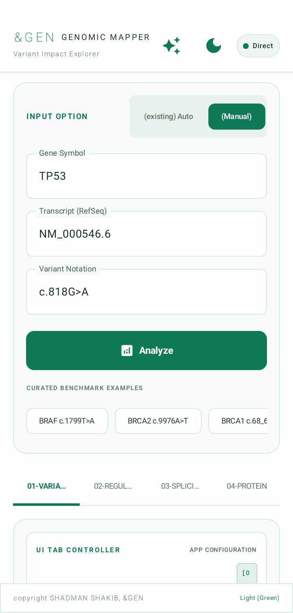
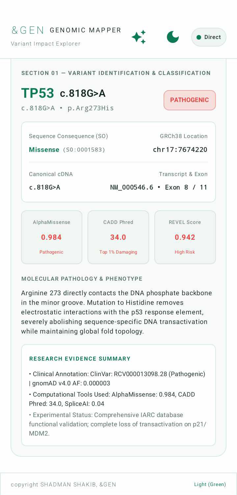
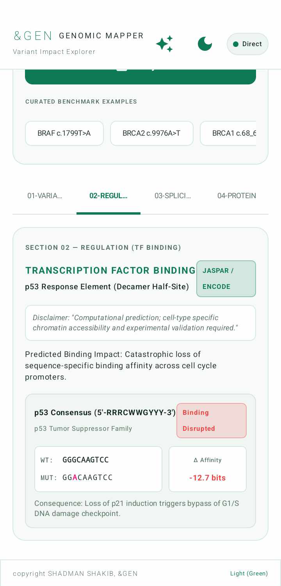
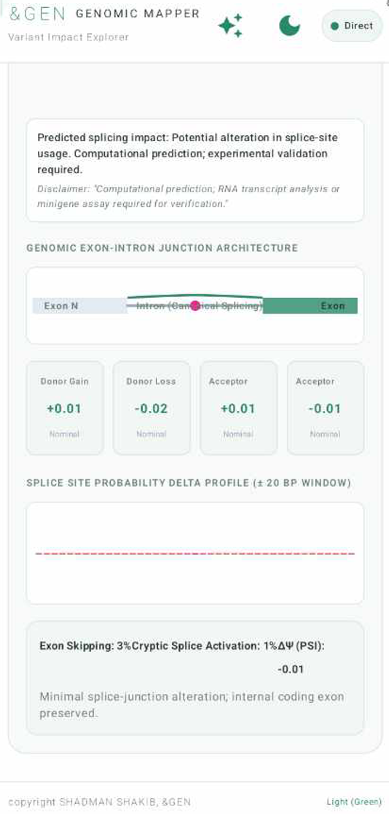
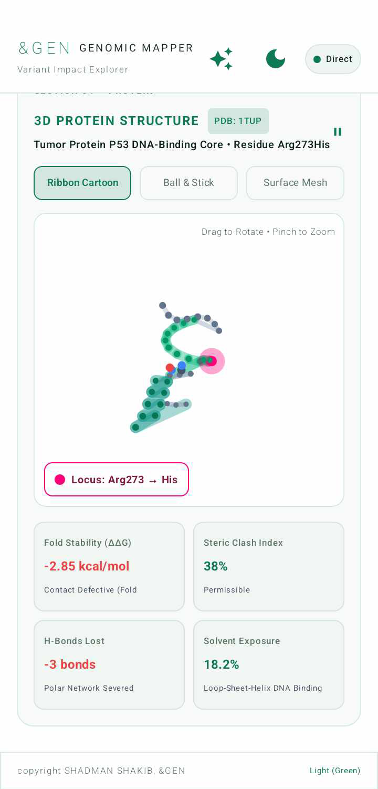

An AI-powered tricorder for biology. Transforming standard smartphones and microscopes into all-in-one field laboratories.
&GEN is a conceptual mobile application designed to act as an all-in-one field laboratory. By pointing a smartphone camera—often through a microscope for cellular work—the app uses advanced Artificial Intelligence and Augmented Reality to instantly identify any biological entity.
From a giant venomous centipede to a microscopic plant root cross-section, &GEN delivers a comprehensive scientific breakdown anywhere on Earth, bridging macro-vision and cellular genomics.
Comprehensive classification for animals, plants, fungi, and parasites.
Instant real-time identification of microscopic bacteria and protozoa.
Detailed histological tissue cross-sections, cell walls, and subcellular organelles.
Advanced heuristic detection of unknown biological objects classified from available data.
Variant Impact Explorer
A specialized, professional-grade software module within the broader &GEN ecosystem. While SENTINEL handles field biology, Genomic Mapper is an advanced clinical engine that takes a specific genetic mutation and instantly calculates exactly how that tiny change in DNA breaks human biology.
When geneticists sequence a tumor or DNA, they uncover hundreds of mutations. Genomic Mapper automates the investigation, transforming raw genetic data into a complete, multi-layered clinical report in seconds.
Seamless input options allowing researchers to select pre-configured benchmark variants (e.g. BRAF c.1799T>A, BRCA2 c.9976A>T) or manually enter specific RefSeq transcript annotations and genomic substitutions.


Input: The user enters a gene (e.g., TP53), a transcript ID, and the DNA change (e.g., c.818G>A).
Output: Translates DNA into protein change (p.Arg273His) and delivers a definitive verdict: PATHOGENIC or Benign.
Evidence: Powered by AlphaMissense (0.984), CADD Phred (34.0), REVEL Score (0.942), ClinVar, and gnomAD at chromosomal location chr17:7674220.
The Biology: Many proteins act as switches turning other genes on or off by binding to DNA.
The Analysis: Predicts whether mutations break this switch, revealing catastrophic loss of sequence-specific binding affinity across cell cycle promoters.
The Data: Integrates JASPAR and ENCODE data, displaying sequence motif changes (WT: GGGCAAGTCC vs. MUT: GGACAAGTCC) and calculating a drop in affinity of -12.7 bits.


The Biology: Pre-mRNA splicing cuts out non-coding introns and stitches exons together.
The Analysis: Evaluates splice error probabilities (donor gain/loss, acceptor gain/loss) across genomic exon-intron junction architectures.
The Verdict: Confirms minimal splice-junction alteration, ensuring internal coding exons remain preserved while isolating impact to protein structure.
The Biology: Single amino acid swaps alter folding stability and 3D molecular geometry.
The Analysis: Renders interactive structural models from the Protein Data Bank (PDB: 1TUP), highlighting exact mutation loci (Residue Arg273His).
Biophysical Metrics: Fold Stability ΔΔG (-2.85 kcal/mol), Steric Clash Index (38%), H-Bonds Lost (-3 polar network bonds severed), and Solvent Exposure (18.2%).

Select Target Specimen or Module
High Toxicity: Neurotoxic Venom. Do not handle without protective equipment.
Forcipules (poison claws), 21 body segments, lateral spiracles identified.
Phospholipase A2 & hyaluronidase enzyme expression predicted.
Myriapoda lineage traceable to upper Silurian period (~420 Mya).
Moving beyond simple nomenclature. &GEN yields complete structural, historical, evolutionary, and molecular understanding for every biological entity.
Integrating safety checks and variant impact analysis directly into the primary scan path to shield researchers before close proximity interaction occurs.
Condensing micro-histology, molecular biology, clinical genomics, and taxonomic classification into a portable smartphone platform accessible anywhere on Earth.
The &GEN suite is designed to bridge the gap between computational theory and physical laboratory application. From identifying unknown macro-organisms in the field to simulating complex molecular docking for drug discovery, &GEN is built to be your portable research assistant.
I am currently offering exclusive, hands-on practical demonstrations of the &GEN platform for researchers, academics, and industry professionals. See how my computational-driven modules can accelerate your workflow in real-time.
Direct Contact Details
To request a physical demonstration, discuss collaboration, or explore the application practically, please reach out directly:
shadman.shakib1@g.bracu.ac.bd